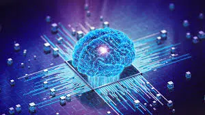
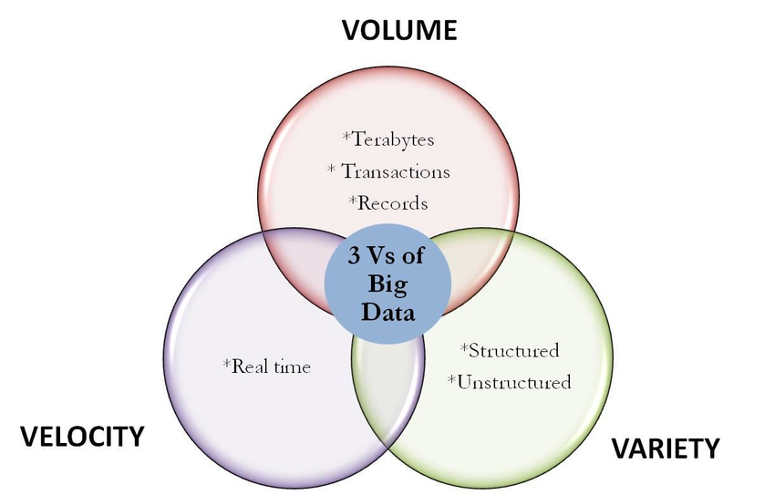
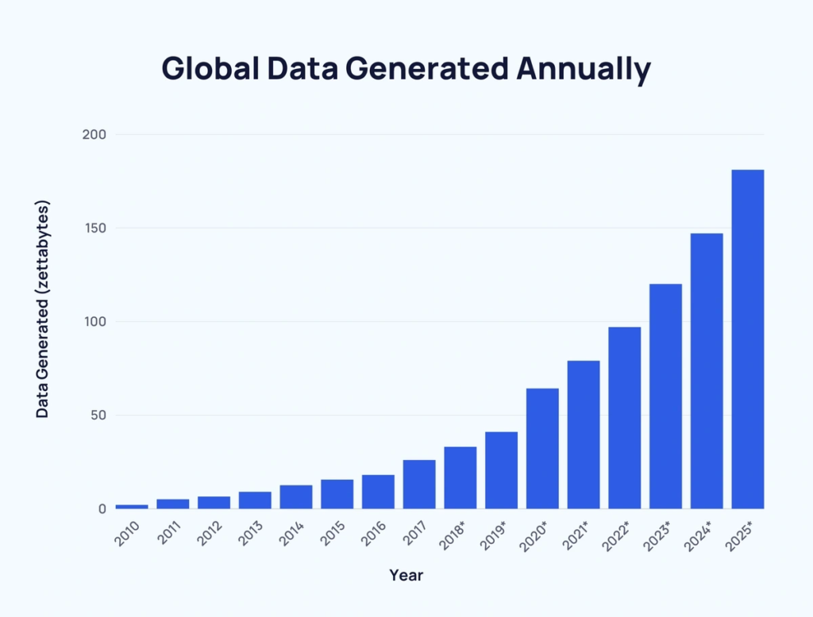

Research Insights: How AI and Big Data are Shaping the Future of Data Analytics
From chaos to clarity—AI and Big Data are transforming complex datasets into actionable strategies. As organizations generate and accumulate ever-growing volumes of data, traditional analysis methods frequently struggle to keep pace with the complexity and scale of these datasets. Conventional approaches often fall short of uncovering detailed patterns and actionable insights, leaving businesses at a disadvantage.
For instance, a hospital collects extensive data on patient symptoms, treatments, and outcomes. Traditional methods might only identify broad health trends, missing subtle indicators of emerging health issues. Advanced techniques can analyze this complex data to uncover patterns that help doctors predict potential health problems before they arise.
In exploring these advancements, I drew insights from the article: 'AI and Big Data: Leveraging Machine Learning for Advanced Data Analytics' by Xiang Chen offers valuable insights. It highlights how advanced algorithms such as deep learning and reinforcement learning are enhancing the ability to process and analyze large datasets.
Introduction
The future of business is data-driven. But with data growing at unprecedented rates, how are companies leveraging AI and machine learning to stay competitive?
As organizations collect more data than ever before, traditional methods of analysis are no longer sufficient. The integration of AI and machine learning is transforming the way businesses extract value from Big Data, enabling them to uncover insights, predict trends, and make smarter decisions in real-time.
For instance, imagine a retail company trying to understand customer buying habits. Using traditional tools like spreadsheets, they can only analyze small amounts of data, which leads to slow insights and missed opportunities. As more data comes in from online sales, store purchases, and customer reviews, these old methods can't handle it all, leaving the company with outdated information. This makes it hard to offer timely recommendations or spot new trends in what customers want.
Challenges and Solutions of Big Data
As organizations deal with the vast complexities of Big Data, they face significant challenges due to its key characteristics: volume, variety, and velocity. Traditional methods often fall short in addressing these issues. However, the integration of Big Data with AI and the use of machine learning are providing powerful solutions to these problems, transforming how we handle and analyze large datasets.

Volume: The sheer amount of data generated by organizations—ranging from social media interactions to sensor data—creates a challenge for traditional storage and processing systems, which struggle to handle such scale.
Solution: To address this, distributed computing systems like Apache Hadoop and cloud-based platforms (e.g., AWS, Microsoft Azure) provide scalable storage and processing capabilities. These systems allow for dynamic resource allocation, enabling organizations to efficiently store and analyze vast datasets without sacrificing performance.
Variety: Big Data comes in many forms, from structured tables to unstructured text, images, and videos, which complicates integration and analysis. Traditional systems aren't built to handle this level of diversity.
Solution: To manage variety, advanced data processing techniques such as natural language processing (NLP) for text and image recognition for visual data help convert unstructured data into analyzable formats. Data integration tools further ensure that different types of data can be harmonized, allowing for more comprehensive insights.
Velocity: The speed at which data is generated—particularly in fields like finance or IoT—requires real-time or near-real-time processing. Traditional systems often can't keep up with the rapid influx of data, leading to missed opportunities.
Solution: Real-time data streaming platforms such as Apache Kafka, combined with real-time processing tools like Apache Spark Streaming, enable businesses to process data instantly. These technologies ensure that data is analyzed as it is generated, supporting fast and accurate decision-making.

- Approximately 402.74 million terabytes of data are created each day.
- 181 zettabytes of data will be generated in 2025.
- Video is responsible for over half (53.72%) of all global data traffic.
Deep Learning for Complex Data
One of the most transformative aspects of AI is deep learning, particularly for unstructured Big Data. Deep learning models like recurrent neural networks (RNNs) or long short-term memory (LSTM) networks excel at time-series data and pattern recognition.
For example: Imagine predicting daily stock prices. An LSTM network can analyze past stock prices to understand patterns and trends over time, allowing it to forecast future prices more accurately. By learning from historical data, the LSTM can make better predictions about future stock movements, helping investors make informed decisions.
Future Trends and Implications
Several emerging trends in AI, Big Data, and machine learning are set to transform data analytics. These trends promise to drive innovation, improve capabilities, and address current challenges:
- Advancements in AI: AI is getting smarter, with models like transformers now leading the way in understanding and generating text.
- Edge Computing: Edge computing processes data closer to its source, reducing delays.
- Explainable AI (XAI): This makes AI decisions more transparent. For example, in healthcare, XAI can show why a model predicts a certain diagnosis, helping doctors trust and interpret AI recommendations better.
- Automated Machine Learning (AutoML): Simplifies model creation and makes advanced analytics accessible. For instance, tools like Google (AutoML) allow users to build models without needing deep technical expertise, making advanced analytics accessible to more businesses.
These trends are driving innovation and improving how we handle and analyze data, paving the way for smarter, more efficient solutions in the future.
Conclusion
In summary, the integration of AI and Big Data through machine learning marks a transformative advancement in data analytics. By leveraging machine learning algorithms, organizations can efficiently process and analyze vast and complex datasets, uncovering valuable insights, predicting trends, and making more accurate data-driven decisions. This powerful combination addresses the inherent challenges of volume, variety, and velocity in Big Data while driving innovation and operational efficiency across multiple industries. As these technologies continue to evolve, they will further enhance the capabilities of data analytics, shaping the future of informed decision-making and strategic planning.
Personal Opinion
The combination of AI, Big Data, and machine learning is a game-changer for data analytics. These technologies help companies process huge amounts of data quickly, find useful insights, and make smarter decisions, which is crucial in today's fast-paced world. AI can also handle repetitive tasks, giving people more time to focus on important and creative work.
But there are challenges too. Data privacy is a big concern, and many AI systems can be hard to understand. This is especially important in areas like healthcare, where knowing how decisions are made is vital. Without the right protections, there's a risk of data being misused.
Overall, while the benefits are huge, companies need to use AI responsibly. Clear rules and ethical practices will be needed to make sure we get the most out of these technologies without putting privacy or trust at risk.
Paper link: AI and Big Data: Leveraging Machine Learning for Advanced Data Analytics